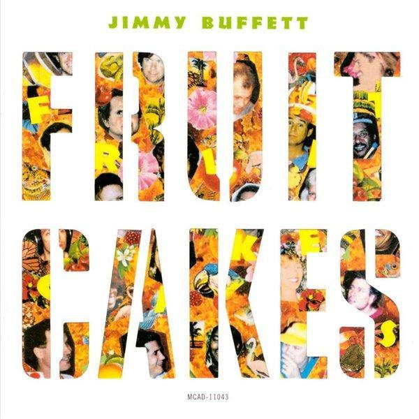

Fruitcakes
13 Oct 2018 · 8 min read
topics: diversityhumanismimperfectionindividualsreligion

From the Dictionary app on my iMac:
fruitcake: 1. A cake containing dried fruit and nuts. 2. (informal) an eccentric or insane person.
I've always considered “Fruitcakes” to be Jimmy Buffet's masterwork. The musical backing is infectious, swaying and danceable, and the background vocals add depth. The words are cleverly crafted, and perfectly suited to Buffett's conversational, wisecracking delivery.
The song is from 1993, and contains some dated references, but these just add to the fun for me.
The singer starts with a spoken introduction, setting up the verses that will follow.
You know I was talking to my friend Desdemona the other day. She runs this space station bake shop down near Boomtown. She told me that human beings are flawed individuals, that the cosmic bakers took us out of the oven a little too early, and that's the reason we're as crazy as we are, and I believe it.
Note what Buffett is doing here. First of all, he establishes the existence of a network of friends who talk to each other regularly. He does this, not only by referencing a conversation with Desdemona, but by talking to the listener in the same vein, thus inviting us into this same circle.
He also establishes the diversity and eccentricity of the individuals in this circle with his description of a “space station bake shop” owned by his friend Desdemona.
He also introduces a framing metaphor, the idea that “the cosmic bakers took us out of the oven a little too early.” And so, in a single sentence, he comes up with his own origin story explaining human fallibility: one of the foundational elements of any religion. And, even though he has not yet referenced the title word, he's already leveraged its meaning in both senses, referring to both human eccentrics and baked goods.
Now the singer continues speaking, giving us an example of his own eccentricity.
Take for example when you go to the movies these days, you know they try to sell you this jumbo drink, 8 extra ounces of watered-down Cherry Coke for an extra 25 cents. I don't want it, I don't want that much organization in my life. I don't want other people thinking for me. I want my Junior Mints. Where did the Junior Mints go in the movies? I don't want a 12 lb. Nestle's crunch for 25 dollars. I WANT JUNIOR MINTS! We need more fruitcakes in this world and less bakers! We need people that care! I'm mad as hell! And I don't want to take it anymore!
And so, although this rant offers an example of the singer's own eccentricity, it also advances the proposition that individuals, with all their imperfections and eccentricities, are preferable to an ethos of standardized, corporate consumerism.
We now transition to the words being sung instead of spoken, with the first appearance of the song's chorus.
Fruitcakes in the kitchen (Fruitcakes in the kitchen) Fruitcakes on the street (Fruitcakes on the street) Strutting naked through the crosswalk
In the middle of the week
Half-baked cookies in the oven (Cookies in the oven)
Half-baked people on the bus (People on the bus)
There's a little bit of fruitcake left in every one of us
And here Buffett fully reveals the song's core proposition, that we humans are all a little half-baked, all fruitcakes of one variety or another.
Now we get a series of verses, each offering a different sort of example of this nuttiness, with the chorus repeated at suitable intervals.
Paradise, lost and found.
Paradise, take a look around.
I was out in California where I hear they have it all.
They got riots, fires and mud slides,
They've got sushi in the mall.
Water bars, brontosaurs, Chinese modern lust,
Shake and bake life with the quake,
The secret's in the crust.
Note that the phrases “shake and bake” and “the secret's in the crust” are both references to advertising slogans of the day, as well as being hijacked in this context to refer to the frequency of California earthquakes.
Speakin' of fruitcakes, how 'bout the government?
Your tax dollars at work.We lost our Martian rocket ship,
The high paid spokesman said.
Looks like that silly rocket ship
Has lost its cone shaped head.
We spent 90 jillion dollars trying to get a look at Mars.
I hear universal laughter ringing out among the stars.
The “cone shaped head” phrase is a reference to the Coneheads featured in Saturday Night Live sketches for many years, as well as a movie released in the same year as this song.
Note also that the image of “universal laughter ringing out among the stars” is another way of putting this song in the sort of broad philosophical context usually reserved for religions. Buffett further emphasizes this cosmic perspective in the next version of the chorus, varying the first few lines to say:
Fruitcakes in the galaxy
Fruitcakes on the earth
Strutting naked towards eternity
We've been that way since birth
Buffett now addresses religion directly.
(Spoken:)
Religion! Religion! Oh, there's a thin line between Saturday night and Sunday morning.
Here we go now. Alright, altar boys.
Mea Culpa Mea Culpa Mea Maxima Culpa
Mea Culpa Mea Culpa Mea Maxima CulpaWhere's the church, who took the steeple?
Religion's in the hands of some crazy-ass people.
Television preachers with bad hair and dimples,
The god's honest truth is, it's not that simple.
It's the Buddhist in you, it's the Pagan in me,
It's the Muslim in him, she's Catholic ain't she?
It's the born again look, it's the WASP and the Jew,
Tell me what's goin on, I ain't got a clue.
With the ascent of the religious right in American politics in recent years, as well as the controversies over Muslims and diverse religious backgrounds, this verse seems as relevant today as it was two and a half decades ago. And although the singer professes to his own cluelessness, I think Buffett gives us more than a few clues here to fitting together some of the fragmented pieces of our modern culture.
Buffett takes on romantic relationships in the next verse.
(Spoken:)
Now here comes the big one.
Relationships!
We all got 'em, we all want 'em. What do we do with 'em?
Here we go, I'll tell ya.
She said you've got to do your fair share,
Now cough up half the rent.
I treat my body like a temple,
You treat yours like a tent.
But the right word at the right time –
“Say, give me a little hug” –
That's the difference between lightning
And a harmless lightning bug.
Doubting that anything I could say would add anything here, I'll quickly move on to the next and final verse of the song.
(Spoken:)
The future.
Captain's log, star date two thousand and something.We're seven years from the millennium,
That's a science fiction fact.
Stanley Kubrick and his buddy Hal
Now don't look that abstract.
So I'll put on my Bob Marley tape,
And practice what I preach.
Get Jah lost in the reggae mon,
As I walk along the beach.
Stay in touch with my insanity
Really is the only way.
It's a jungle out there, kiddies,
Have a very fruitful day!
The spoken intro to this last verse obviously references the Star Trek television series, and the line about “Kubrick and his buddy Hal” refers to the film 2001: A Space Odyssey. The phrase “Bob Marley tape” reminds us of cassette tapes and the days of the Sony Walkman, before iTunes, iPods and iPhones.
Here Buffett seems to be speaking to us most directly, first suggesting some questions about where we're headed as a species, then offering himself and his listeners some final words of advice, then bidding us good day in his own eccentric fashion, and finally leaving us with the image of the singer/songwriter/philosopher meandering down the beach with his headphones on, lost in his reggae-tinged world.
Buffett's not quite done with us yet, though. We're treated to another delivery of the chorus, and then, just as he opened with a spoken intro, he closes with a spoken outro. And then, within the outro, he brackets another example of a personal rant between admonitions to “spread those crumbs around” and “keep baking, baby, keep baking.”
That's right, you too. Yeah those crumbs are spread all around this universe.
I've seen fruitcakes. I saw this guy in Santa Monica rollerskating naked through the crosswalk. Down in New Orleans, in the French Market, there are fruitcakes like you cannot believe. New York, forget it. Fruitcake city. Down Island, we've got Fruitcakes.
Spread them crumbs around. That's right, we want 'em around. Keep baking baby. Keep baking.
Fruitcakes clocks in at seven minutes and 40 seconds, suitable for a rock artist's magnum opus. But the pieces all fit together beautifully, and there's not a second I would want to remove. There's no grand pretension here, but a lot of tongue-in-cheek humanist wisdom, all set to an infectious Caribbean groove.
And we can never have too much of that, can we?